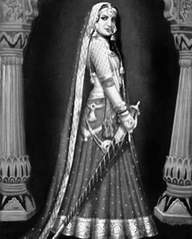

Rani Naiki Devi the regent queen of Chalukya dynasty is famous for defeating Mohammed Ghori in the battle of Kasahrada in 1178 CE. The defeat was so brutal Ghori never attempted to invade Gujarat again.
